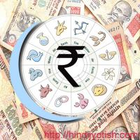

| वैदिक ज्योतिष | |
|---|---|
 |
क्या आपकी कुंडली में लक्ष्मी योग है? - Do you have Laxmi Yoga in your kundaliज्योतिषशास्त्र की दृष्टि में धन वैभव और सुख के लिए कुण्डली में मौजूद धनदायक योग या लक्ष्मी योग काफी महत्वपूर्ण होते हैं. जन्म कुण्डली एवं चंद्र कुंडली में विशेष धन योग तब बनते हैं जब जन्म व चंद्र कुंडली में यदि द्वितीय भाव का स्वामी एकादश भाव में और एकादशेश दूसरे भाव में स्थित हो अथवा द्वितीयेश एवं एकादशेश एक साथ व नवमेश द्वारा दृष्ट हो तो व्यक्ति धनवान होता है. |
 |
व्यवसाय एवं नौकरी में उन्नति -प्रमोशन (Your Promotion and astrology)अधिकांश व्यक्तियों का प्रश्न होता है कि उन्हें व्यवसाय अथवा सर्विस में प्रमोशन कब मिलेगा? कुछ व्यक्तियों को अत्यधिक परिश्रम के बाद भी आशानुरूप सफलता नहीं मिल पाती है और कुछ को थोड़ी सी मेहनत से ही अच्छी सफलता मिल जाती है. यह ग्रहों और उनके गोचर का प्रभाव होता है |
राजनीति में प्रवेश एवं सफलता के लिये ज्योतिष योग (Astrology Yoga for Carrer in Politics)अन्य व्यवसायों एवं कैरियर की भांति ही राजनीति में प्रवेश करने वालों की कुंडली में भी ज्योतिष योग होते हैं. राजनीति में सफल रहे व्यक्तियों की कुंडली में ग्रहों का विशिष्ट संयोग देखा गया है |
|
होटल प्रबन्धन में सफलता के लिये ज्योतिष योग (Astrology & Success in Hotel Management)होटल प्रबन्धन एक आकर्षक कैरियर है. यदि आप होटल प्रबन्धन के क्षेत्र में अपना करियर बनाना चाहते हैं तो देखिये कि कौन से ज्योतिष योग आपको इस व्यवसाय अथवा इस क्षेत्र में सफलता दिला सकते हैं |
|
आजिविका में सफलता के सूत्र: ज्योतिष के झरोखे से (Success in your Career from the Perspective of Vedic Astrology)आजिविका के क्षेत्र में सफलता व उन्नति प्राप्त करने के लिये व्यक्ति में अनेक गुण होने चाहिए, सभी गुण एक ही व्यक्ति में पाये जाने संभव नहीं है. किसी के पास योग्यता है तो किसी व्यक्ति के पास अनुभव पर्याप्त मात्रा में उपलब्ध है. कोई व्यक्ति अपने आजिविका क्षेत्र में इसलिये सफल है कि उसमें स्नेह पूर्ण व सहयोगपूर्ण व्यवहार है |
|
प्रश्न ज्योतिष से विवाह का विचार - When I will get married - Horary Asrologyविवाह कब होगा इस प्रश्न का विचार करने के लिए द्वितीय, सप्तम, तथा एकादश भाव में कौन से ग्रह हैं इनको देखा जाता है (The second and the seventh house should be assessed for marriage.) |
|